化粧水つけずに寝た日、何回もあります。顔は諦めたくないので、短く終わる形だけ続けています。ここは、調べて「へえ」と思ったことの置き場です。
資生堂が紹介している塗り方に「軽圧式塗布法」というものがあって、ひとつの工程につき3回ずつ、慣れれば1工程60〜90秒だそうです。
化粧水と乳液で2工程。つまり3分あれば足りる計算になります。時間がないから削る、ではなくて、もともと長くかけるものではなかったという話でした。
出典：資生堂
いちばん雑になりやすいところでした。
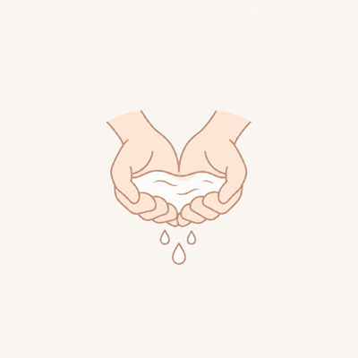
「ぬめりがなくなるまで20回程度、約1分間を目安に、人肌程度のぬるま湯で」。数えたことがなかったので、やってみたら全然足りていませんでした。
資生堂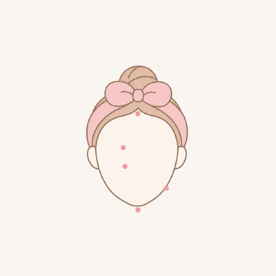
髪の生え際、目頭、小鼻、あご下、フェイスライン。言われてみると、全部わたしが流していない所でした。
資生堂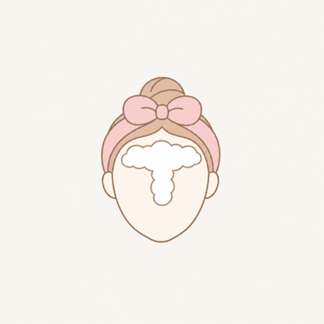
皮脂量の多い額・小鼻から。ほおから塗り始めていたので、順番が逆でした。
資生堂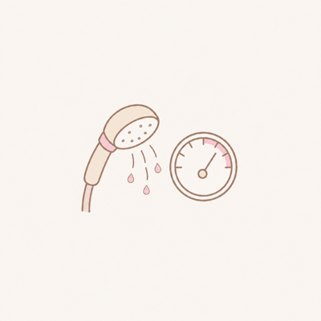
湯船もシャワーも。冬はつい熱くしてしまうところです。手洗いは33〜35℃がすすめられていました。冷たすぎると汚れ落ちに時間がかかり、熱すぎるとうるおいが落ちるそうです。
資生堂 ／ コーセー順番と置き場所の話です。
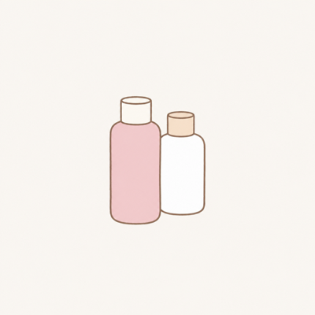
乳液・クリームは化粧水の後。順番に迷ったとき、ここに戻ってきます。
花王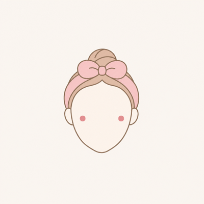
乾燥しやすい「ほお」から。そのあと額、目まわり、鼻すじ、口元、フェイスライン、首の順。
資生堂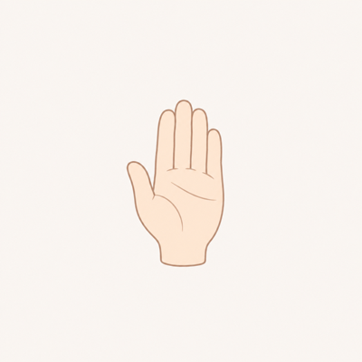
「そもそも手のひらには皮脂腺がなく、手の甲も顔に比べると少なめ」。手が荒れやすい理由がこれで分かりました。
コーセー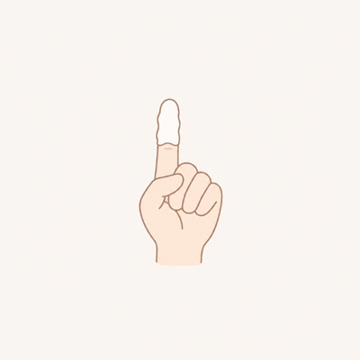
コーセーは「人差し指の指先から第1関節まで」、資生堂は「パール粒1〜2コ分」。会社によって言い方が違いますので、手元のパッケージに書いてあればそちらが正です。
コーセー ／ 資生堂ここは知らないままの人が多そうです。
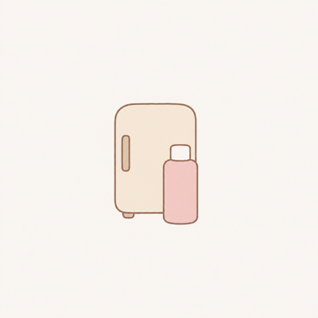
「出し入れによる急激な温度変化」が理由だそうです。夏に冷やして使うのが良いと思っていたので、これはいちばん意外でした。
花王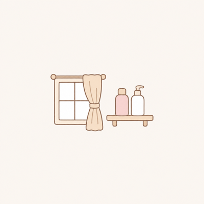
温度と湿度の変化が少ない場所。洗面所の窓ぎわは、たぶん一番向いていません。
花王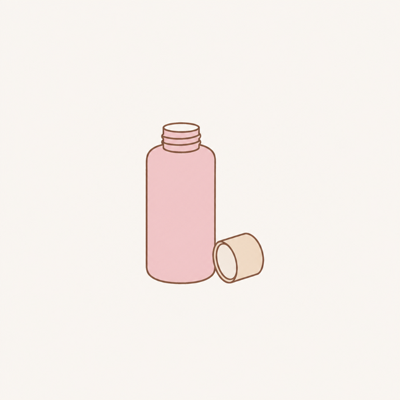
閉まっていないと中身の水分が蒸発して硬くなる、ホコリや雑菌が入る。急いでいる日ほど開けっぱなしにしていました。
ポーラ資生堂のデータで、10月を境に急に下がるそうです。気温が下がると空気中の水分量が減り、そこに暖房が重なります。「急に乾いてきた」と感じる時期には理由がありました。
資生堂楽天で買っているものを置いています。